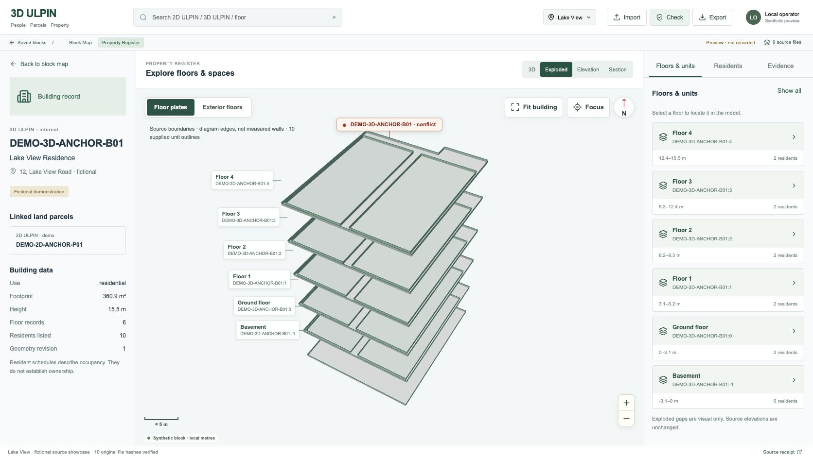

The source pack contains a raster concept, not its original city geometry. This authored reconstruction uses the same importable GeoJSON/CSV contract, preserves the accepted register, and keeps all parcel/floor identities searchable. The layout, park, focal red building and surrounding streets follow the reference; procedural materials and vegetation remain visibly different from the photographic-style reference.

Exterior draw batches: 1,601 → 392 (76% fewer). Production orbit at a 1672 × 941 browser viewport: mean frame interval 6.94 ms; CPU render mean 2.43 ms / p95 2.9 ms. This local browser benchmark uses adaptive 0.8 pixel ratio during motion and restores crisp rendering when stationary; it is not a hardware-independent performance guarantee.